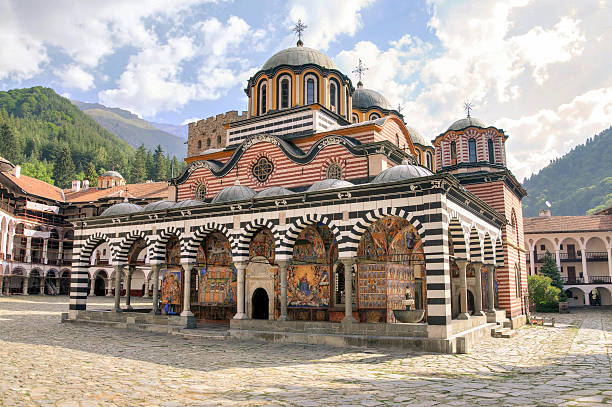

The Rila Monastery is the main shrine of Bulgaria. This is a male monastery, and it is located in the Rila Mountains, about 120 km from the Bulgarian capital - Sofia.
Rila Monastery is rightfully considered one of the most beautiful monasteries in Bulgaria.
It is located in a picturesque location high in the mountains and is named after St.John of Rila. The frescoes on the walls of the temples are painted in such bright colours that it seems as if the monastery is emitting light. It is so good that in 1983, it was included in the UNESCO World Heritage List.
In the southwest of Bulgaria, not far from the borders with Macedonia and Greece, stretches the Rila mountain range. It is famous for the highest peak in the country, called Musala (2925 m). The Rila Monastery, which is located in the northwestern part of the massif, also brought popularity to these places. The monastery is situated on the banks of the Rila River at an altitude of 1147 m.
Looking at the lush, colourful frescoes decorating the monastery, it’s hard to believe that it appeared more than a thousand years ago - in the first half of the 10th century! In 927, it was founded by John of Rylsky. This saint is highly revered in Bulgaria and is considered the patron saint of the country. The monastery appeared in the place where Saint John lived in a cave.
Rila Manastery

The excellent preservation of the monastery is explained by the kings constantly patronising it and donating large sums for its maintenance. The monastery flourished most from the 12th to the 14th centuries. Then, a strong earthquake occurred, and the monastery had to be extensively rebuilt. Then, it turned into an impregnable fortress. However, this did not save it from the Turks, who plundered it and partially destroyed the buildings. The revival of the monastery began only in the middle of the 15th century. Then, the Turkish Sultan obtained permission for help from the Athos Monastery of St. Panteleimon. The brothers David, Theophanes and Joasaph from the city of Kyustendil were engaged in solving this complex issue. A critical moment was the transfer to Rila of the relics of John of Rila, which were kept in the Bulgarian capital of Tarnovo, destroyed by the Turks. After this, the Rila Mountains again became a place of pilgrimage. Donations for the monastery's restoration came, in particular, from Moscow from the Russian Orthodox Church. The Serbian, Romanian and Greek churches also helped. Icons, church utensils, and books were brought to Bulgaria. During the period of the Ottoman yoke, the Rila Monastery became a place where it was possible to preserve the Bulgarian language and culture fully. The monastery showed an example of successful resistance. Subsequently, the monastery burned down twice, but was utterly revived. All the people collected money for restoration. It acquired its current appearance due to another reconstruction after the fire of 1833. Then, a church school was established at the monastery. The most ancient structures that have survived today are the Khrel’s Tower, the bishop’s throne and the carved gate. In the 70s of the last century, the Rila Monastery received the status of a national historical monument, and a little later, it was taken under UNESCO protection.